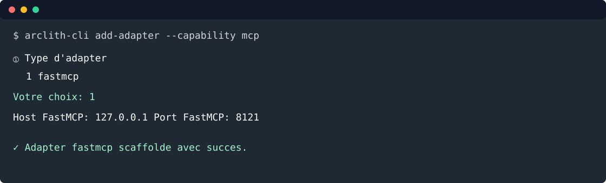

5. Exposer un MCP¶
Objectif: générer la configuration FastMCP avec la CLI, puis exposer les mêmes opérations métier via des tools MCP.

Depuis la racine du projet:
arclith-cli add-adapter --capability mcp
Répondre aux prompts:
① Type d'adapter
1 fastmcp
Votre choix (numéro ou nom): 1
③ Paramètres fastmcp
Host FastMCP (127.0.0.1): 127.0.0.1
Port FastMCP (8001): 8121
Confirmer la génération ? [y/n] (y): y
La CLI crée:
config/adapters/inbound/fastmcp.yaml
Tools MCP¶
Créer src/todo_list_service/adapters/inbound/fastmcp/tools/todo_tools.py:
from __future__ import annotations
from datetime import date, datetime
from typing import Annotated
import fastmcp
from pydantic import Field
from arclith.domain.ports.outbound.repository import Repository
from todo_list_service.adapters.inbound.schemas.todo_schema import TodoSchema
from todo_list_service.application.use_cases.create_todo import CreateTodoCommand, CreateTodoUseCase
from todo_list_service.domain.models.todo import Todo, TodoStatus
class TodoMCP:
def __init__(
self,
create_todo: CreateTodoUseCase,
repository: Repository[Todo],
mcp: fastmcp.FastMCP,
) -> None:
self._create_todo = create_todo
self._repository = repository
self._mcp = mcp
self._register_tools()
def _register_tools(self) -> None:
create_todo = self._create_todo
repository = self._repository
@self._mcp.tool
async def create_todo_item(
title: Annotated[str, Field(description="Titre court de la todo.")],
due_date: Annotated[date, Field(description="Date d'échéance ISO, ex. 2026-09-01.")],
description: Annotated[str, Field(description="Description détaillée.")] = "",
status: Annotated[TodoStatus, Field(description="todo, wip ou done.")] = TodoStatus.TODO,
completed_at: Annotated[datetime | None, Field(description="Date de réalisation si status=done.")] = None,
) -> dict:
"""Create a todo through the application use case."""
todo = await create_todo.execute(
CreateTodoCommand(
title=title,
description=description,
due_date=due_date,
status=status,
completed_at=completed_at,
)
)
return TodoSchema.model_validate(todo).model_dump(mode="json")
@self._mcp.tool
async def list_todo_items() -> list[dict]:
"""List todos currently available in the repository."""
todos = await repository.find_all()
return [TodoSchema.model_validate(todo).model_dump(mode="json") for todo in todos]
Créer src/todo_list_service/adapters/inbound/fastmcp/tools/__init__.py:
from todo_list_service.adapters.inbound.fastmcp.tools.todo_tools import TodoMCP
__all__ = ["TodoMCP"]
Créer src/todo_list_service/adapters/inbound/fastmcp/register.py:
from __future__ import annotations
import fastmcp
from arclith import Arclith
from todo_list_service.adapters.inbound.fastmcp.tools import TodoMCP
from todo_list_service.infrastructure.containers.todo_container import (
build_create_todo_use_case,
build_todo_repository,
)
def register_tools(mcp: fastmcp.FastMCP, arclith: Arclith) -> None:
repository = build_todo_repository(arclith)
create_todo = build_create_todo_use_case(arclith)
TodoMCP(create_todo, repository, mcp)
Entrypoint API + MCP¶
Remplacer main.py par:
"""Application entrypoint for todo-list-service."""
from __future__ import annotations
import os
import sys
from pathlib import Path
import fastmcp
from arclith import Arclith
from todo_list_service.adapters.inbound.fastapi.register import register_routers
from todo_list_service.adapters.inbound.fastmcp.register import register_tools
_CONFIG = Path(__file__).parent / "config"
_VALID_MODES = {"api", "mcp_http", "all"}
MODE = os.getenv("MODE", "api")
if MODE not in _VALID_MODES:
print(f"MODE invalide: {MODE!r}. Valeurs: {sorted(_VALID_MODES)}", file=sys.stderr)
sys.exit(1)
arclith = Arclith(_CONFIG)
app = arclith.fastapi()
register_routers(app, arclith)
def build_mcp() -> fastmcp.FastMCP:
mcp = arclith.fastmcp("Todo MCP")
register_tools(mcp, arclith)
arclith.instrument_mcp(mcp)
return mcp
def _run_api() -> None:
arclith.run_api("main:app")
def _run_mcp_http() -> None:
arclith.run_mcp_http(build_mcp())
if __name__ == "__main__":
match MODE:
case "api":
arclith.run_with_probes(_run_api, transports=["api"])
case "mcp_http":
arclith.run_with_probes(_run_mcp_http, transports=["mcp_http"])
case "all":
arclith.run_with_probes(_run_api, _run_mcp_http, transports=["api", "mcp_http"])
Tester sans client externe¶
Créer tests/test_todo_mcp.py:
import pytest
from fastmcp import Client
from main import build_mcp
@pytest.mark.asyncio
async def test_mcp_create_and_list_todos() -> None:
async with Client(build_mcp()) as client:
tools = await client.list_tools()
assert {tool.name for tool in tools} >= {"create_todo_item", "list_todo_items"}
result = await client.call_tool(
"create_todo_item",
{
"title": "Tester le MCP",
"description": "Appeler le même use case que l'API",
"due_date": "2026-09-01",
"status": "todo",
},
)
assert not result.is_error
listed = await client.call_tool("list_todo_items", {})
assert not listed.is_error
Lancer:
uv run python -m pytest tests/test_todo_mcp.py
Smoke HTTP MCP:
MODE=mcp_http uv run python main.py
Le serveur écoute sur http://127.0.0.1:8121/mcp.
Voie rapide¶
arclith-cli add-adapter \
--capability mcp \
--adapter fastmcp \
--param host=127.0.0.1 \
--param port=8121 \
--yes
Étape suivante: ajouter un agent.